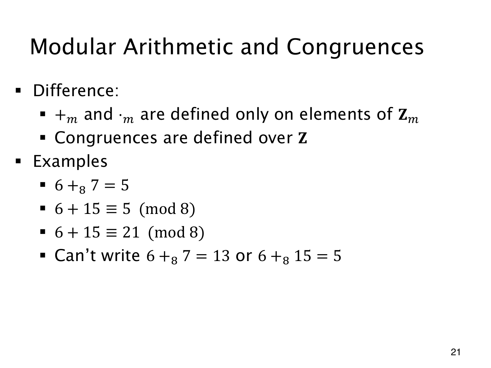

L1.12 · 第 21 页讲解原文
查看这一页课件

同一个计算，符号的定义域不同
6+87=5 是合法的模加法：两个输入都在 Z8 中，普通和 13 取模后为 5。若把结果写成 13 就错了，13 也不属于这个余数集合。
按课件的定义，+m,⋅m 只接受 Zm 中的元素，输出也留在其中；同余关系则可比较整个 Z 上的整数。
因此 6+15≡5(mod8) 正确：普通和为 21，与 5 相差 16。写成 6+15≡21(mod8) 也正确，右边不必取标准余数。
但 6+815 不符合这里的定义，因为 15∈/Z8。可以先取 15mod8=7，再算 6+87；也可以从头使用普通整数加法与同余号。检查一个式子时，要先确认输入的定义域，再判断等号或同余号是否用对。